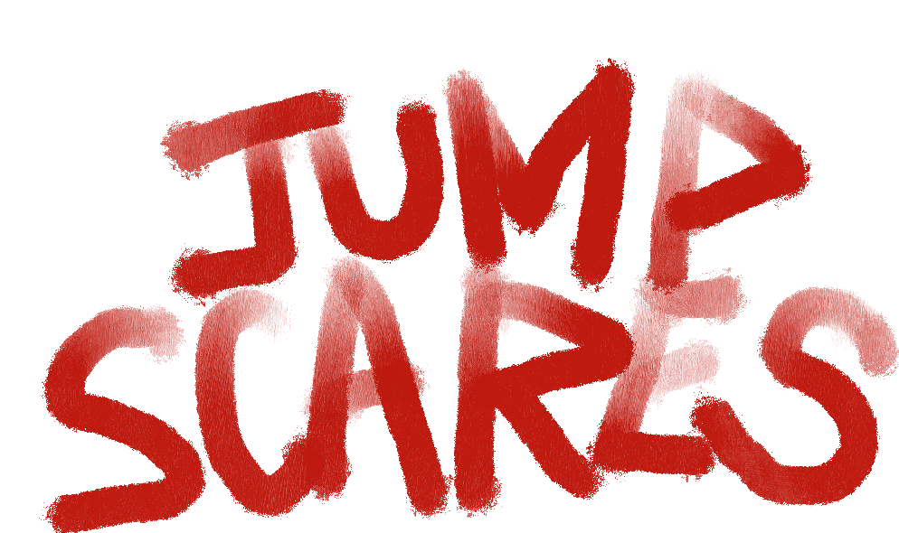

"Horror Jump Scares That Will Scare You to Death." YouTube, uploaded by Amazon Prime Video UK, 15 Oct. 2021, youtu.be/BCKoyByMdRg
“Ten Jigaboo boys went out to dine…” Horror directors love JUMP SCARES.
Jump scares are "quick moments of action within a shot that surprises the audience and character.” (Draven 52)
A good jump scare makes audiences jump from their seats!
The dataset about jump scares is from the web "Where’s The Jump?”
Alfred Hitchcock once said, “There is no terror in the bang, only the anticipation of it.”
In saying so, he tried to convince that jump scares eventually relate to joy instead of fear.
Audiences are tightly vested with the protagonists and unwittingly attempt the harrowing getaway experienced by the characters.